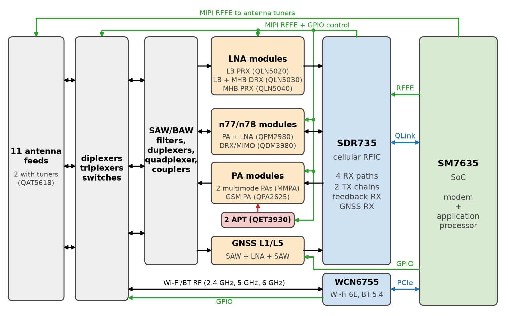
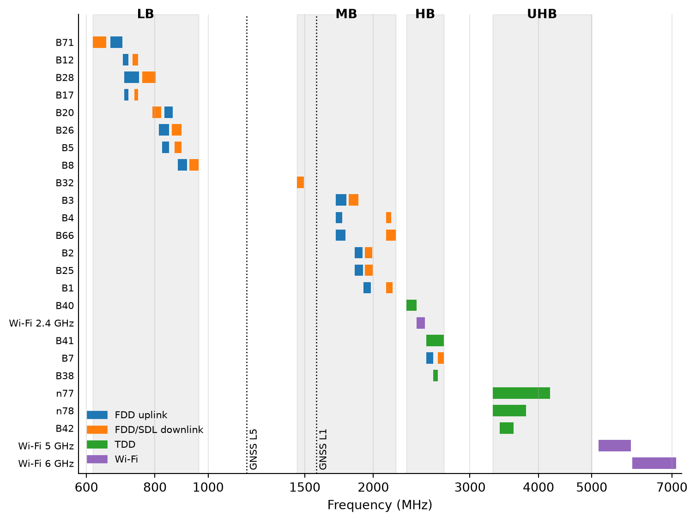
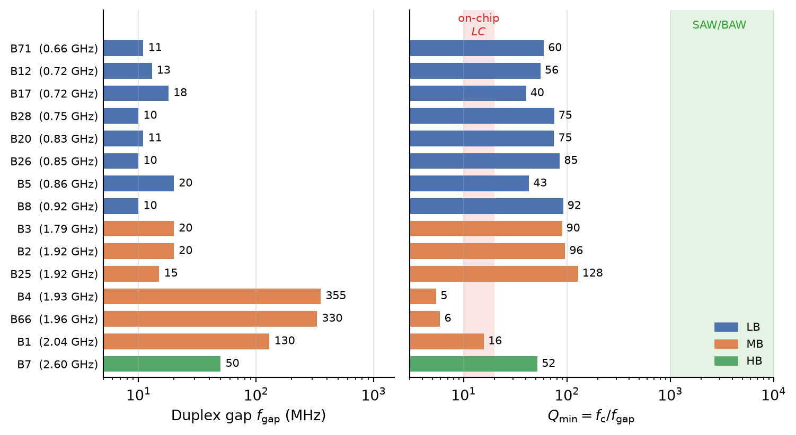
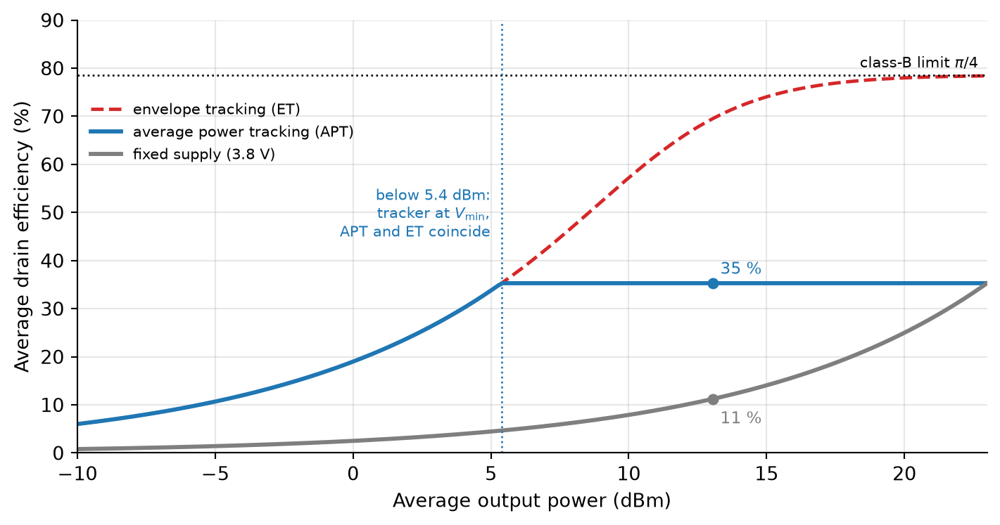
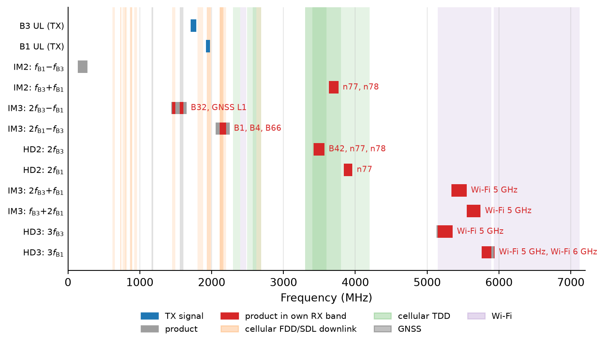

Radio-Frequency Integrated Circuits
Important
All statements about the hardware of the phone in this appendix are taken from the published schematics and specifications (Fairphone B.V. 2025). The functions of the components are derived from their labels in the schematics, as datasheets of most components are not public. Where numbers are needed for an example calculation, they are marked as assumptions.

| Band | Group | Duplex | 2G | 3G | 4G | 5G | DL MIMO | UL MIMO |
|---|---|---|---|---|---|---|---|---|
| 1 | MB | FDD | x | x | x | 4×4 | 2×2 | |
| 2/25 | MB | FDD | x | x | x | x | 4×4 | 1×1 |
| 3 | MB | FDD | x | x | x | 4×4 | 2×2 | |
| 4/66 | MB | FDD | x | x | 4×4 | 1×1 | ||
| 5/26 | LB | FDD | x | x | x | x | 2×2 | 1×1 |
| 7 | HB | FDD | x | x | 4×4 | 2×2 | ||
| 8 | LB | FDD | x | x | x | x | 2×2 | 1×1 |
| 12/17 | LB | FDD | x | 2×2 | 1×1 |
| Band | Group | Duplex | 2G | 3G | 4G | 5G | DL MIMO | UL MIMO |
|---|---|---|---|---|---|---|---|---|
| 20 | LB | FDD | x | x | 2×2 | 2×2 | ||
| 28 | LB | FDD | x | x | 2×2 | 1×1 | ||
| 32 | MB | SDL | x | 2×2 | — | |||
| 38/41 | HB | TDD | x | x | 4×4 | 2×2 | ||
| 40 | HB | TDD | x | x | 4×4 | 2×2 | ||
| 42 | UHB | TDD | x | 4×4 | 1×1 | |||
| 71 | LB | FDD | x | x | 2×2 | 2×2 | ||
| n77/n78 | UHB | TDD | x | 4×4 | 1×1 |

\[ Q_\mathrm{min} = \frac{f_\mathrm{c}}{f_\mathrm{gap}}, \tag{83}\]

Number of Filters in a Phone
Every FDD band needs a duplexer, every band used for receive diversity and MIMO needs additional receive filters, and the GNSS and Wi-Fi paths need their own filters as well. This is why a phone contains a large number of acoustic filters, and why a new band cannot simply be added in software.
Figure 115: Simplified primary receive path of the Fairphone (Gen. 6) for band 1 or band 3, from the antenna to the digital I/Q interface.
\[ N_\mathrm{VCO} \geq \frac{\ln 2}{\ln \left( \frac{1 + \mathrm{TR}}{1 - \mathrm{TR}} \right)}. \tag{84}\]
Note 13: Noise Figure of the Receive Path
We assume (as typical values, not taken from datasheets) a total loss of \(L\) = 2.6 dB in front of the LNA (diplexer 0.4 dB, antenna switch 0.7 dB, and filter 1.5 dB), an external LNA with NF = 1 dB and a gain of \(G\) = 18 dB, and an RFIC with NF = 6 dB. With the Friis formula (Equation 22) and \(F = L\) for the passive components, the receiver has a noise factor of
\[ F = L \left( F_\mathrm{LNA} + \frac{F_\mathrm{RFIC} - 1}{G} \right) = 1.82 \cdot \left( 1.26 + \frac{3.98 - 1}{63.1} \right) = 2.38, \]
Noise Figure of the Receive Path
i.e., a noise figure of 3.8 dB. Without the external LNA, the noise figure would be \(2.6\,\text{dB} + 6\,\text{dB} = 8.6\,\text{dB}\), which would reduce the sensitivity (Equation 24) by almost 5 dB.
Figure 116: Simplified transmit path of the Fairphone (Gen. 6) for band 1 or band 3.
\[ \eta = \frac{\pi}{4} \frac{\mathrm{E}\{a^2\}}{\mathrm{E}\{V_\mathrm{DD} \, a\}}, \tag{85}\]
\[ \eta_\mathrm{APT} = \frac{\sqrt{\pi}}{2 \sqrt{\text{PAPR}}}, \tag{86}\]


\[ \text{IIP3} = P_\mathrm{in} + \frac{P_\mathrm{in} - P_\mathrm{IM3}}{2} = 20\,\text{dBm} + \frac{20 - (-110)}{2}\,\text{dB} = 85\,\text{dBm}, \]
| Component in the Fairphone (Gen. 6) | Topic | Course section |
|---|---|---|
| Band plan, duplexers, quadplexer | FDD/TDD, filter \(Q\) | Section 3.5 |
| SDR735 receivers and transmitters | Direct-conversion transceiver | Section 3.1 |
| LNA modules, RX noise figure | Noise figure, Friis formula, LNAs | Section 2.3.3, Section 4 |
| Antenna tuners, LNA input matching | Impedance matching | Section 4.1 |
| I/Q downconversion and upconversion | Mixers, quadrature LO generation | Section 5, Section 5.5 |
| LO generation from 617 MHz to 3.8 GHz | Oscillator tuning, PLLs | Section 6.6, Section 7 |
| MMPAs, APT supply | PA efficiency, supply modulation | Section 8.1, Section 8.3 |
| Feedback receiver | Power control, EVM, predistortion | Section 8.5 |
| Dual uplink B1/B3 | Intermodulation, self-interference | Section 2.2, Section 9 |